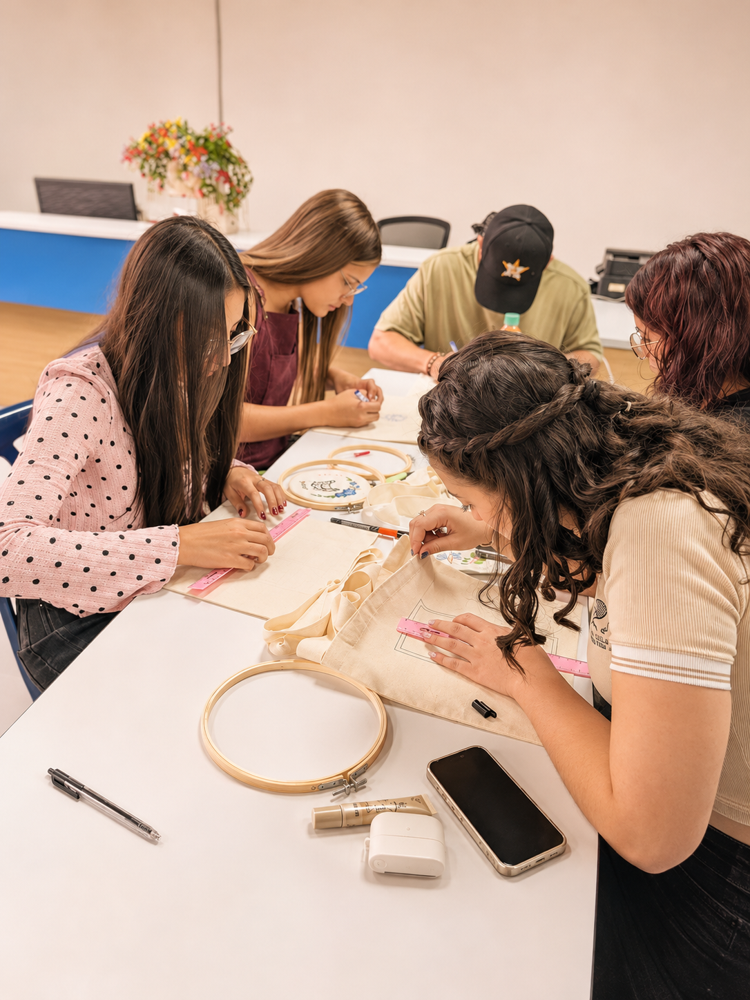

Aprende desde cero
No necesitas experiencia previa. Te acompañamos paso a paso para que aprendas las técnicas básicas del bordado.
Un encuentro para explorar la creatividad, compartir saberes y descubrir todo lo que podemos crear con nuestras manos.

Un encuentro de La Rueca comienza con una mesa abierta a las ideas. Cada persona llega con su propio ritmo y encuentra un lugar para experimentar sin exigirse resultados perfectos.
Entre materiales, conversaciones y nuevas puntadas, la experiencia se convierte en algo que va más allá del objeto terminado.
Ver momentos reales ↗
Cada encuentro es una invitación a descubrir técnicas manuales, explorar ideas y disfrutar el proceso creativo sin presiones.
Nos reunimos en cafés y espacios culturales de Medellín y el Valle de Aburrá para aprender, conversar y crear comunidad alrededor de lo hecho a mano.
Conoce los próximos talleres ↗Tres formas de disfrutar una experiencia hecha a mano.
No necesitas experiencia previa. Te acompañamos paso a paso para que aprendas las técnicas básicas del bordado.
Cada taller es una oportunidad para desarrollar tu creatividad y crear una pieza única hecha por ti.
Compartimos un espacio tranquilo para aprender, conversar y encontrarnos alrededor del bordado.